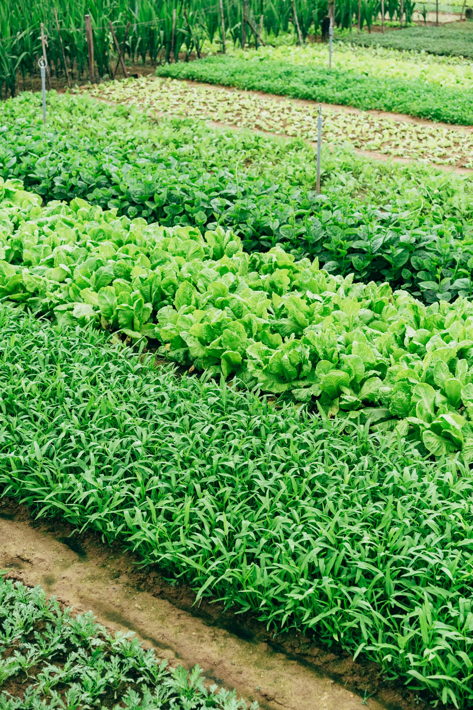
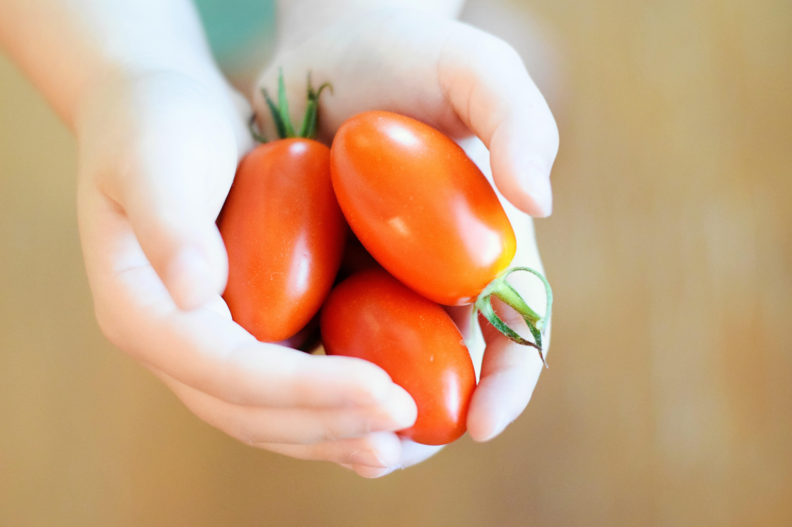
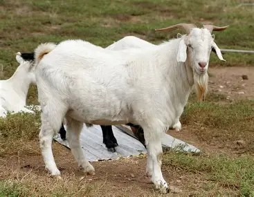
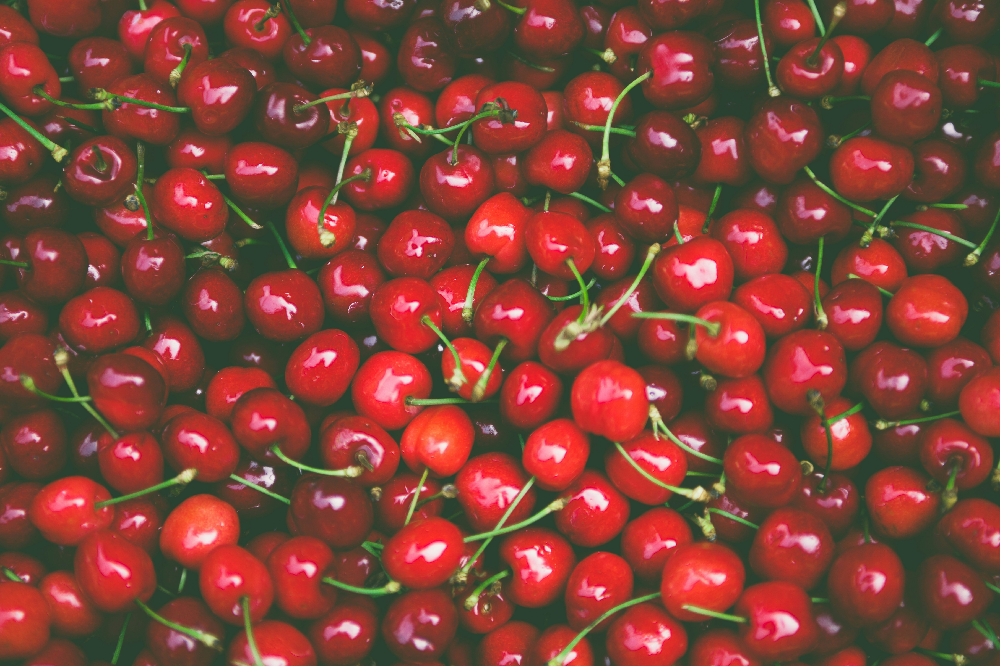

Agricultural Supply
Insights into dependable sourcing, supply planning, wholesale fulfillment, and long-term agricultural partnerships.
Agricultural knowledge and company perspectives
Explore perspectives on agricultural supply, quality, responsible growth, customer relationships, livestock, produce, distribution, and the systems supporting dependable operations.

Insights into dependable sourcing, supply planning, wholesale fulfillment, and long-term agricultural partnerships.
Perspectives on product quality, consistency, handling practices, and customer expectations across agricultural markets.
Updates covering livestock operations, fresh produce, seasonal harvests, and agricultural product availability.
Announcements regarding company developments, partnerships, operational improvements, and future initiatives.
Featured Insight
Successful agricultural businesses are built on more than production. They rely on dependable systems that support quality, communication, logistics, and long-term customer relationships.
At Mooney Agrifarm, we believe sustainable growth comes from strengthening every stage of agricultural operations—from sourcing and product handling to distribution and customer support. Consistency creates confidence, and confidence strengthens lasting partnerships.
Learn more about our approach →Latest Articles
Explore practical perspectives designed to support customers, suppliers, producers, and agricultural partners.

Reliable delivery and dependable quality create stronger commercial relationships than occasional large harvests.

Careful planning, health standards, and operational discipline improve long-term production performance.

Customers value transparency, dependable timelines, and consistent expectations throughout every stage of supply.